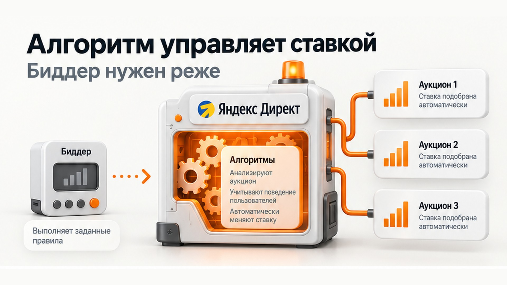
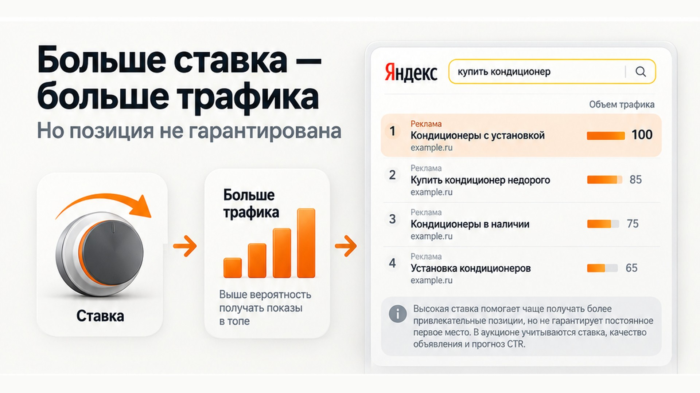

Блог о платном трафике
Биддер для Яндекс Директ: нужен ли он сегодня
Биддер для Яндекс Директ, или бид-менеджер, - это внешний инструмент, который автоматически меняет ставки в рекламной кампании по заранее заданным правилам. Например, повышает ставку, если ее недостаточно для нужного объема трафика, или снижает, когда аукцион становится дешевле.
Несколько лет назад такие сервисы были гораздо актуальнее. Специалисту не приходилось постоянно заходить в Директ, смотреть прогнозные ставки по сотням ключевых фраз и вручную их корректировать.
Сейчас ситуация изменилась. Для большинства рекламных кампаний отдельный биддер я бы вообще не использовал. Яндекс рекомендует автоматические стратегии и прямо указывает, что они способны вносить корректировки значительно чаще, чем человек или сторонние инструменты управления рекламой.
Что такое биддер и как он работает
Принцип достаточно простой.
Биддер подключается к рекламному кабинету через API Яндекс Директа, получает информацию о ставках и аукционе, сравнивает ее с заданными рекламодателем правилами и при необходимости отправляет новую ставку.
API Директа позволяет назначать ставки ключевым фразам и автотаргетингу, а также получать данные, необходимые для управления ими.
Например, можно задать правило:
- Получать определенный объем поискового трафика.
- Не превышать установленную максимальную ставку.
- Повышать ставку, если для нужного объема трафика ее недостаточно.
- Снижать, если необходимый трафик можно получить дешевле.
То есть это автоматизация ручного управления ставками.
Сам по себе биддер ничего не знает о бизнесе. Он просто выполняет заложенный алгоритм.

Почему биддеры раньше были популярнее
Раньше управление контекстной рекламой было намного сильнее завязано на ключевые фразы и ставки.
Специалист мог постоянно следить за аукционом и пытаться удерживать объявления на нужных позициях. Если кампаний и ключевых фраз много, вручную выполнять такую работу практически невозможно.
Бид-менеджер решал эту проблему автоматически.
До сих пор многие сервисы описывают его примерно так:
- контролирует цену клика;
- следит за изменением аукциона;
- поддерживает необходимый объем трафика;
- автоматически повышает и снижает ставки;
- уменьшает объем ручной работы.
Технически все это действительно возможно. Проблема в другом - сама логика управления рекламой в Яндекс Директе изменилась.
Почему в большинстве кампаний биддер уже не нужен
Главная причина - Яндекс Директ сам стал огромной системой автоматического управления ставками.
Если используется стратегия «Максимум конверсий», рекламодателю вообще не требуется определять ставку для каждой ключевой фразы. Алгоритм автоматически подбирает ее под конкретный аукцион, чтобы получить максимум целевых действий с учетом заданной цены конверсии, ДРР или бюджета.
При этом система учитывает намного больше информации, чем обычный внешний биддер.
Условно говоря, задача сместилась от:
«какую ставку поставить по этой ключевой фразе?»
к вопросу:
«за каких пользователей сейчас имеет смысл конкурировать активнее?»
Это принципиально разные подходы.
Если система умеет оценивать вероятность конверсии конкретного пользователя, жестко устанавливать одинаковую логику ставок для всех аукционов уже не всегда рационально.
Какую стратегию выбрать в Яндекс Директ
Даже ручная стратегия уже не полностью ручная
Есть еще один нюанс.
В актуальной стратегии «Максимум кликов с ручными ставками» Яндекс позволяет рекламодателю задавать исходные ставки, но при этом использует прогнозатор конверсий.
Ставка может автоматически снижаться для переходов с низкой прогнозируемой вероятностью конверсии и увеличиваться для более перспективных пользователей.
Получается довольно интересная конструкция:
рекламодатель или биддер задает ставку -> Яндекс дополнительно учитывает собственные алгоритмические сигналы -> конкретный аукцион определяет результат.
Поэтому внешний сервис уже не контролирует процесс настолько непосредственно, как может показаться.
Биддер в основном имеет смысл на поиске
Для обычных performance-кампаний практическое применение бид-менеджера сегодня связано прежде всего с поисковой рекламой.
Стратегия «Максимум кликов с ручными ставками» позволяет самостоятельно назначать ставки отдельным условиям показа именно в кампаниях только на поиске. Для кампаний с показами в РСЯ ручное управление ставками недоступно - ставки назначает система.
Поэтому покупать отдельный Яндекс биддер для обычной рекламной кампании в РСЯ я смысла не вижу.
Там сама идея управления рекламой построена совершенно иначе.

Можно ли с помощью биддера постоянно держать первое место
Вот здесь часто возникает неправильное ожидание.
Высокая ставка повышает возможности рекламодателя в аукционе, но нельзя просто установить правило «всегда показываться первым» и гарантированно получать первую позицию на каждом показе.
В поисковом аукционе объявления ранжируются с учетом комбинации ставки, коэффициента качества и прогноза CTR для конкретного показа. Сам аукцион происходит в режиме реального времени.
Кроме того, Яндекс работает с понятием объема трафика.
В классическом варианте блока премиум-показов первое место может соответствовать объему трафика 100, второе - 85, третье - 75, четвертое - 65. Но эти величины не являются постоянными: результат зависит от конкретного запроса, формата объявления и структуры рекламного блока.
Поэтому современная логика ближе к покупке дополнительного объема трафика, чем к покупке фиксированной позиции.
Высокая ставка позволяет чаще выигрывать более привлекательные условия показа, но не превращает первое место в постоянно закрепленную позицию.
Когда биддер все-таки может быть полезен
Я вижу достаточно узкий сценарий - очень конкурентный поиск с выраженным срочным спросом.
Например:
- вызов эвакуатора;
- аварийное вскрытие замков;
- некоторые срочные ремонтные услуги;
- другие ситуации, где клиент хочет решить проблему прямо сейчас.
Представим человека, который стоит ночью возле закрытой машины и ищет, кто сможет открыть замок.
В таком запросе рекламодателю может быть важнее максимально часто присутствовать в наиболее заметной части поисковой выдачи, чем пытаться экономить несколько процентов на средней стоимости клика.
Здесь можно сознательно использовать ручную стратегию и довольно высокие ставки.
А если ключевых фраз много и вручную следить за ними неудобно, биддер способен автоматизировать эту работу.
Но даже здесь нужно понимать ограничение: вы покупаете возможность активнее участвовать в аукционе и получать больший объем трафика, а не постоянное первое место.
Когда я бы точно не подключал биддер
Для обычного бизнеса отдельный сервис управления ставками чаще всего будет дополнительной сущностью без понятной пользы.
Я бы не использовал его, если:
- кампания нормально работает на «Максимуме конверсий»;
- в Метрику передаются качественные цели;
- у алгоритма достаточно данных для обучения;
- основной KPI - заявки или продажи, а не позиция объявления;
- реклама работает преимущественно в РСЯ;
- нет конкретной причины использовать ручные ставки.
В такой ситуации намного полезнее заниматься качеством данных.
Если Директ понимает, какие пользователи оставляют заявки, какие лиды проходят квалификацию и какие клиенты покупают, алгоритм получает намного более полезную информацию, чем просто правило «повышай ставку до определенного объема трафика».
Сквозная аналитика Яндекс Директ
Обучение стратегии в Яндекс Директе
Что использовать вместо биддера
В большинстве проектов я бы сначала определил, на что вообще должна оптимизироваться реклама.
Если есть достаточное количество нормальных конверсий - использовать «Максимум конверсий» и передавать системе максимально качественные цели.
Если данных пока мало - можно использовать «Максимум кликов» с ограничением стоимости трафика и постепенно собирать статистику.
И только если речь идет о специальной поисковой кампании, где действительно требуется жестко контролировать ставки и получать максимально возможный объем трафика, рассматривать ручное управление и бид-менеджер.
Это соответствует текущей рекомендации самого Яндекса: автоматические стратегии являются предпочтительным вариантом, а ручное управление остается отдельным инструментом для ситуаций, где рекламодатель сознательно хочет самостоятельно управлять ставками.
Нужен ли биддер для Яндекс Директ в 2026 году
В большинстве рекламных кампаний - нет.
Биддер не стал бесполезным технически. Через API по-прежнему можно получать данные аукциона и автоматически менять ставки.
Но сама задача, которую когда-то решали бид-менеджеры, стала значительно менее актуальной.
Современный Яндекс Директ все сильнее работает через автоматические стратегии, прогноз конверсии и управление ставкой на уровне конкретного аукциона. Для бизнеса обычно важнее получить нужное количество качественных заявок по приемлемой цене, чем пытаться автоматически удерживать определенную позицию.
Поэтому я отношусь к биддеру как к нишевому инструменту для отдельных поисковых кампаний, а не как к обязательной части настройки Яндекс Директа.